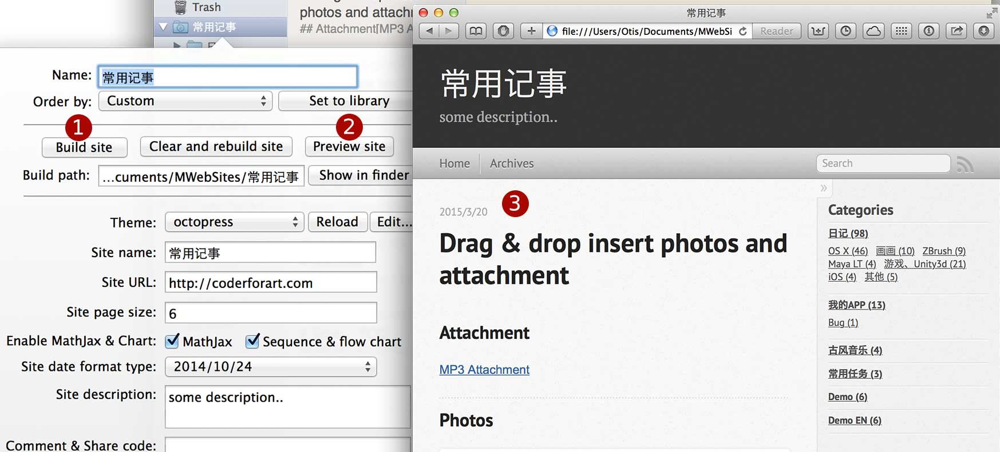

[ ]或[x]
CMD + V 粘贴为JPG格式，CMD + Shift + V 粘贴为PNG透明格式。外部文档模式使用 CMD + N 新建、CMD + O 打开。
文档库模式使用 CMD + Shift + N 或搜寻右边的新建文档按钮新建、CMD + L打开文档库。
文档库模式使用分类树组织和管理文档，支持拖放或粘贴插入图片并直接显示，插入非图片则会生成连结。
支持把Markdown或文本文档导入到文档库，也支持把整个分类或者文档（可选多个）导出为HTML、PDF、Markdown。

一键把分类生成静态博客，目前可选二个主题，支持自定主题。只要填入Disqus、多说提供的代码即可以为博客增加评论功能。可勾选让网站支持MathJax和顺序图、流程图。
